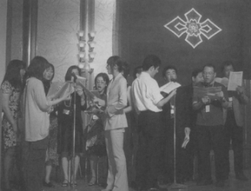

高松高校ゆかりの人たちや音楽部OBの親睦および合唱を楽しむことをスローガンに、歌が好きな人が集う場所、それが、"TMCE（高松高校音楽サークル東日本・仮称）～合唱同好会～"です。
応援団とブラスバンドに合わせて、東京王翠会のステージでも楽しく歌っています。
世話役が、立上げの昭和世代から平成世代に代わり、『いつかどこかのステージで歌ってやろう』と秘めた闘志を燃やしつつ、でも、出来る範囲で気長に続けていくことを目標に活動しています。

もちろん人の集うところ、会話あり、笑いあり、心のふれあいあり、ついでにお酒もあります。音楽っていいですよ。一人で作る音楽もステキだけど、仲間と作る音楽は素晴らしいものですのです。
歌は体が楽器です。 だから道具が要りません｡
高松高校ゆかりの人であり､かつ、音楽が好きな人なら、経験や実績は必要ありません。
体一つでご参加ください！
いつでも声をかけてくださいね。一緒に声を合わせましょう。
世話役（連絡先）
桑原正芳（平成元年卒）
連絡先
廣瀬壮一(昭和51年卒)
新井(旧姓中西)ゆかり(昭和54年卒)